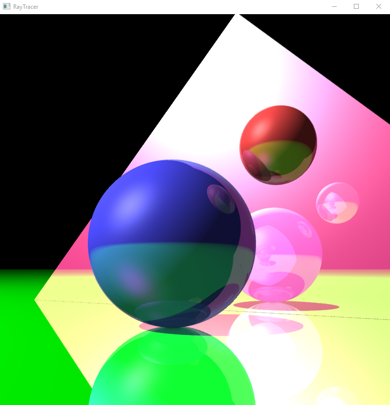
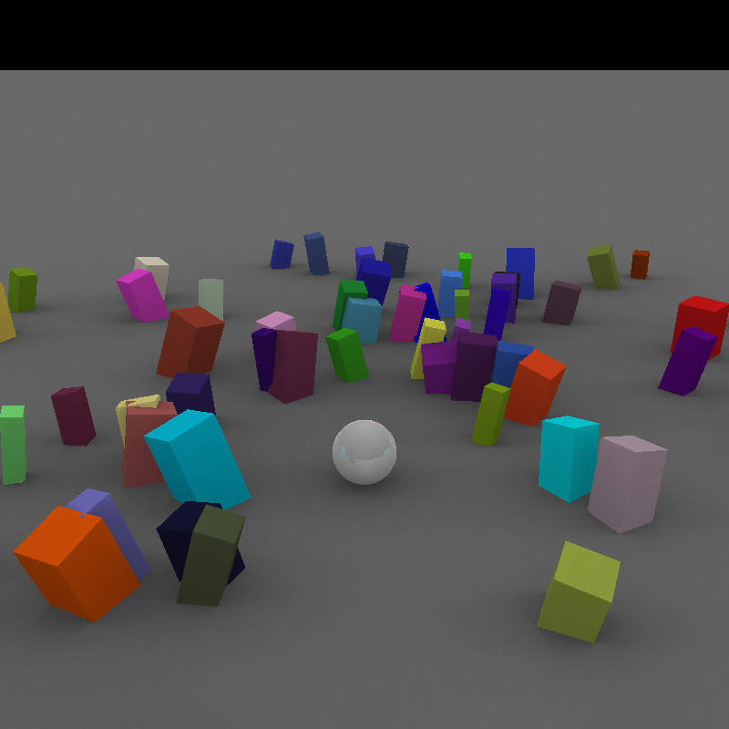
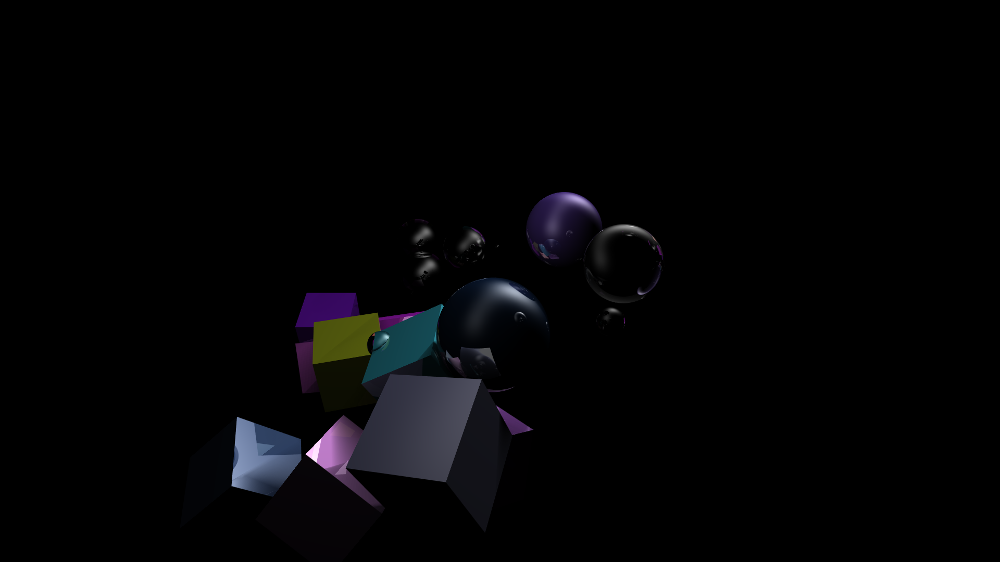

Math Library
In the beginning of the project I focused myself entirely on learning what raytracing meant because I didn't know anything about it. Our lecturers advised us to make our own
math libraries in order to ensure that we will not have problems with mathematics later on. The math library needed to include vector math, but also
matrix math, and I had no clue how matrices worked. I spent time researching how they are used but it was difficult since I wasn't very aware of
how vector math worked, yet. I had to learn dot product and cross product. Then I had to learn how translate/rotate/scale matrices worked. Finally, there was
the 'inverse matrix' which was difficult to learn since you needed to know what a determinant meant beforehand. I implemented the library as quickly as possible
and instead of learning it precisely from the beginning, I learned it by practising while making the Ray-Tracer.
Ray Intersection

In order to understand how raytracing worked, I watched a complete tutorial for how it is done, and I copied it. While copying it I experimented
and learned how ray-plane and ray-sphere intersections are done. After learning the algorithms in detail and researching through many other websites, I made
ray-triangle intersection on my own. Since I copied it, I needed to prove to myself that I actually understand the algorithms and so I decided to present what I
had learned in front of my class of 40 people.
Secondary Rays

I implemented shadow rays, reflection rays, refraction rays, ambient occlusion rays, and even rays for light refracted from glass. The shadow rays are just rays
searching for light and lowering the brightness of a pixel if they're intersecting with an object. The reflection and refraction rays are using recursion and algorithms
for calculating the angles in which they should be sent. Additionally, after calculation of those rays, Fresnel Equations is applied so that the reflection/refraction
can be more realistic. The ambient occlusion rays(shown in the picture on the right) are very performance-heavy since they are sent from an intersection point through
random points in a hemisphere. It is the same way for calculating soft shadows since they are multiple shadow rays searching for a light with radius. The rays that make
the light refracted through glass are shown in the picture below, in the smallest sphere. If they weren't applied, the sphere would've been fully black.
